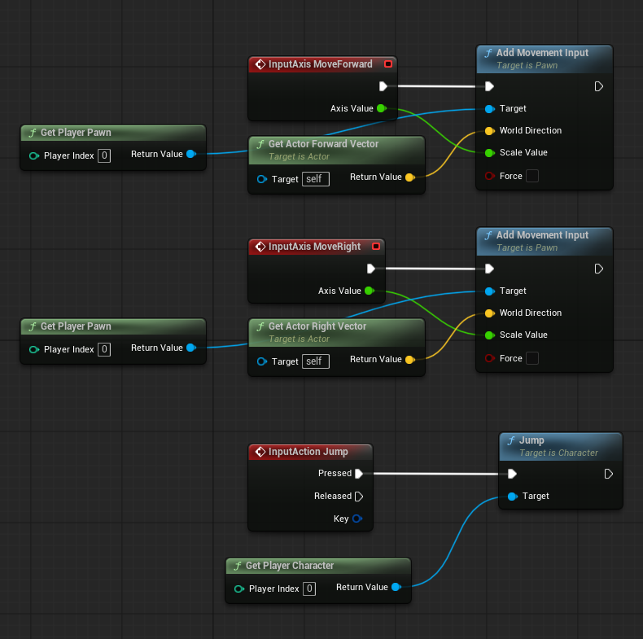
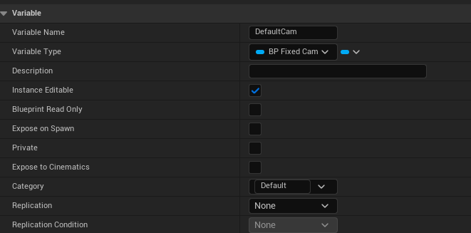
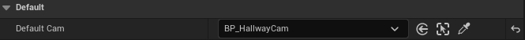

Development Portfolio — IMGD 4000
Role in the Project
During the Alpha milestone, my primary responsibility was implementing the player movement system. For the Beta milestone, I shifted towards interaction and puzzle logic, specifically developing the note-pickup mechanic and the portrait bookshelf hint system.
Challenges and Problem-Solving
1. Alpha Movement Integration Failure
Initially, I designed the movement system and animations for a freely rotating camera. The player could only move forward relative to camera direction, so when our team integrated assets, the character was stuck facing forward, unable to turn horizontally. Naturally, the rotate-left/right functionality I had implemented became useless in the integrated project.


To synchronize with the project’s fixed camera design, I removed my rotation system entirely. I modified input handling so directional keys directly changed the player’s facing direction instead of rotating a camera around them. The Alpha character model was Unreal Engine’s default mannequin, but later another teammate replaced it with the finalized model and animation set.
2. Beta Note Interaction Mechanic
Implementing the note system was relatively straightforward. When the player overlapped a note’s
collision box and pressed E, I triggered a Custom Event in BP_Note.
That event spawned and displayed a UI widget (BP_NoteWidget) on screen. Pressing
E again removed the widget.
This toggle behavior was handled using FlipFlop nodes in Blueprints. The widget Blueprint
contained simple animations for when the note appears and disappears, helping the interaction feel
more polished and readable to the player.

3. Camera Switching for Puzzle Hint
The most difficult task during Beta was handling the camera transition toward a hallway portrait and
then returning to normal gameplay. I created a dedicated camera component inside
BP_Portrait so the portrait could be viewed from a separate cinematic angle. Using
camera blending, switching to this camera was straightforward but returning was not.
When blending back, the camera consistently snapped behind the player’s feet instead of returning to the hallway camera. After unsuccessful debugging attempts, I discovered that our camera programmer had already built a Custom Event specifically for restoring the hallway view. However, calling it still produced errors.
A teammate suggested re-examining variable assignments. Following that hint, I realized that in the details panel, the variable intended to reference the hallway camera was never manually assigned. After correcting this reference binding, the issue was fully resolved.
 This experience reinforced a critical lesson, that not every problem should be solved alone. Asking for help revealed overlooked assumptions much faster than trial-and-error debugging.

Technical Elements Used
- Blueprint scripting for interaction logic
- Overlap detection and input conditionals (
Ekey interaction) FlipFloptoggling logic for UI visibility- UI Widget animation for note appearance/disappearance
- Camera components and camera blending between gameplay and portrait views
- Custom Events for system-level camera switching and restoration
Lessons Learned
1. Design Alignment Matters
My Alpha movement system failed because it ignored team-wide camera design assumptions. Collaborative projects require alignment early; otherwise, extra work and refactoring become inevitable later in the pipeline.
2. Communication Accelerates Debugging
The camera bug took far too long to solve because I initially isolated myself while debugging. Directly asking teammates revealed the missing variable reference and solved the problem quickly. Open communication is often more effective than silently struggling.
3. Reference Binding Is Critical in Unreal Engine
Many Unreal Engine issues arise not from complex logic errors but from unassigned or incorrectly bound object references. This project reminded me to always check variable bindings in the details panel when something “mysterious” happens in-game.
Version Control Choice and Experience
We used Git and GitHub as our version control tools, mainly due to their familiarity and universal adoption among teammates. They provided a reliable workflow for merging Blueprint assets and handling level/scene file conflicts. Although Blueprint merging required extra caution, it was manageable with communication, clear ownership of assets, and disciplined commit practices.